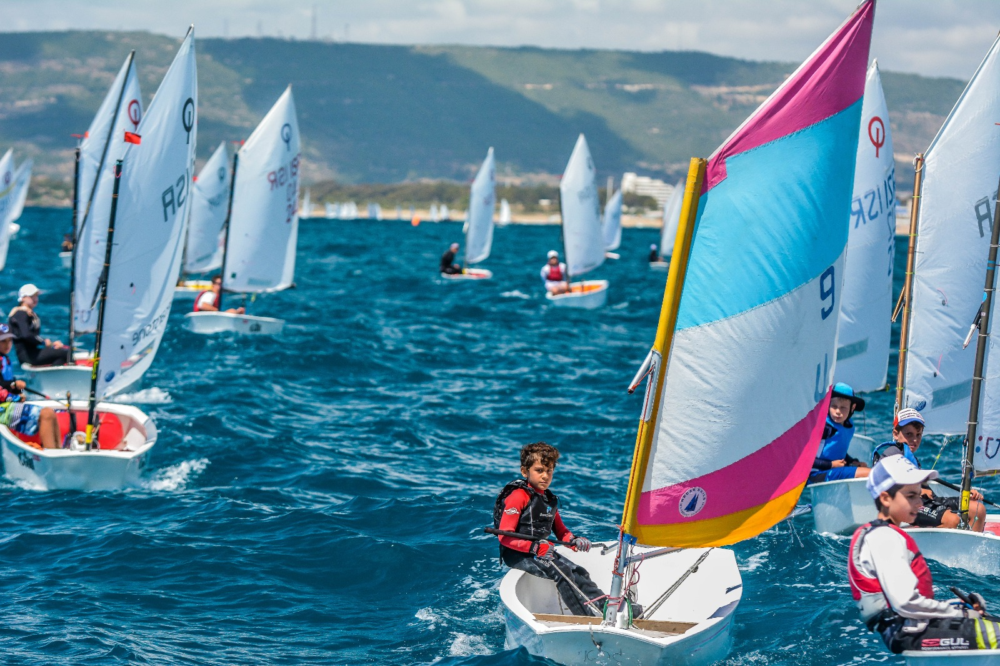
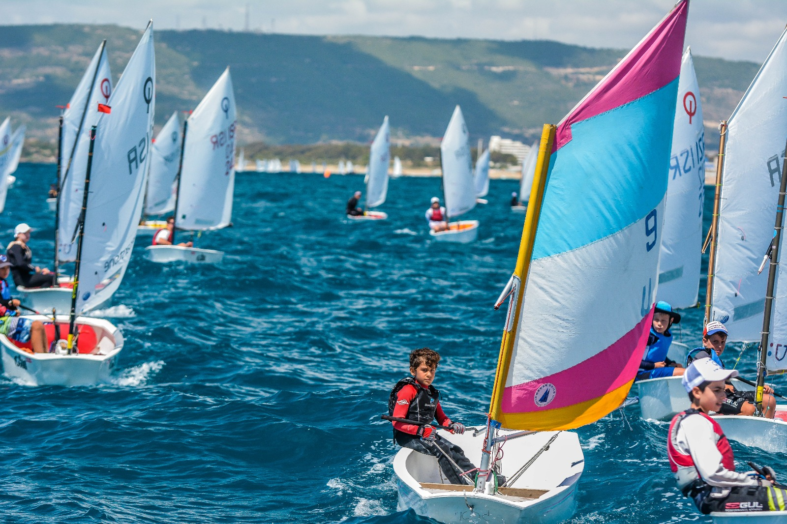

מועדון השייט נהריה הוא מועדון ותיק ומקצועי, המוביל בתחום השייט באזור הצפון. המועדון מתמחה בהדרכה ולימוד שייט וגלישת רוח ספורטיבי ותחרותי, תוך דגש על מצוינות מקצועית, ניסיון רב שנים, וחיבור לערכי הים והטבע. הצטרפו אלינו למסע ימי מרתק
 

סירת לֵיְיזֶר (ILCA) היא סירת מפרש פופולרית בסגנון One-Design. הסירה מיועדת לשייט יחיד. מעצבי המפרשיות הקנדים, ברוס קירבי ואיאן ברוס, עיצבו את הדגם תוך שימת דגש על פשטות ויעילות. הלייזר היא אחת מסירות היחיד הנפוצות ביותר בעולם. הלייזר ידועה כדגם האולימפי הפיזי ביותר בענף. גילאי 13+

סירת אופטימיסט פיבר היא סירת המפרש הראשונה של רוב ילדי השייטים בעולם. הסירה קלה ללימוד ובטוחה לשימוש, עם עיצוב קומפקטי ויציב. דגם זה משמש בתחרויות ילדים ובני נוער ומהווה בסיס ללימוד יסודות השייט. ממדיה הקומפקטיים תרמו להיותה הסירה הפופולרית ביותר לשם הכרת עולם השיט לילדים. כמו גם היא זכתה לפופולריות בשל היותר זולה יחסית, פשוטה וקלה לתפעול. גילאי 11-13
אופטימיסט פלסטיק הוא דגם סירת מפרש ייעודי לילדים ובני נוער, המתאים ללימודי שייט ולהשתתפות בתחרויות מקצועיות. הסירה עשויה חומר פלסטי עמיד, המבטיח יציבות גבוהה, תחזוקה מינימלית ועמידות בתנאי ים קשים. דגם האופטימיסט נחשב לפלטפורמת השייט המובילה בעולם לגילאי 7-15, ומשמש כבסיס מקצועי לפיתוח מיומנויות השייט ולטיפוח דור העתיד של הספורט הימי. ⛵
גלשן BIC הוא גלשן מקצועי המתאים ללמידה ולהתקדמות בענפי הגלישה והשייט. הוא עשוי מחומרים פלסטיים מתקדמים שמקנים לו עמידות גבוהה וביצועים טובים במים. גלשנים אלו פופולריים במיוחד בקרב גולשים מתחילים ומתקדמים, ומשמשים ללימוד טכניקות, אימונים ולתחרויות מקצועיות🌊. גילאי 8-14
גלשן IQ Foil הוא גלשן חדיש ומתקדם המיועד לענפי גלישת הרוח התחרותית. הגלשן משלב טכנולוגיית Hydrofoil מתקדמת, המאפשרת ריחוף מעל פני המים, מהירות גבוהה וביצועים מיטביים בתנאי רוח שונים. דגם ה-IQ Foil משמש כסטנדרט אולימפי רשמי לגלישת רוח, ומתאים לגולשים מקצועיים 💨 גילאי 14+
אלוף עולם לייזר רדיאל
סגן אלוף אירופה לייזר סטנדרט
אלוף גביע אירופה לייזר 4.7
אלוף עולם גלישת רוח
אלופת עולם גלישת רוח
אלופי ישראל במספר דגמים
אליפות ישראל לקבוצות
הצטרפו עכשיו לחוגי השייט וגלישת הרוח במועדון השייט נהריה!
לפרטים נוספים והרשמה לחצו על הקישור מטה: